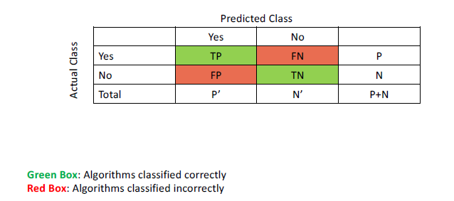
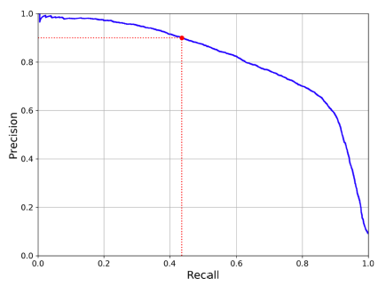
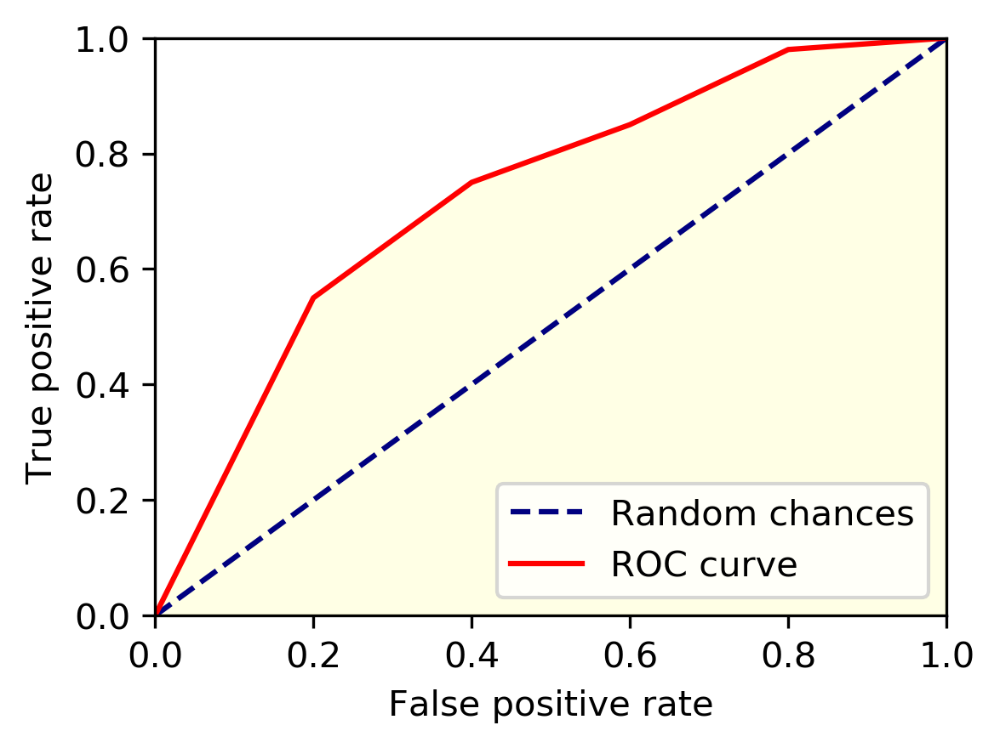
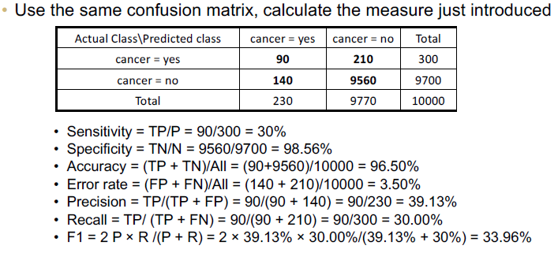
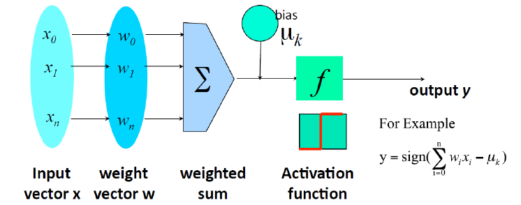
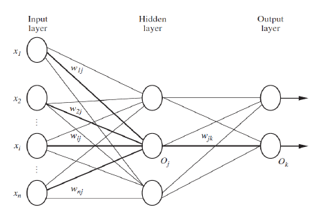

Terminology
Introduction
Data Mining is the process of discovering interesting patterns, models, and other kinds of knowledge from massive amounts of data.
Interestingness is an either subjective or objective measure to guide the discovery process in data mining in which knowledge from data is judged on being novel, useful, and easily understood by humans.
Data Mining Pipeline
Data Preparation
Cleaning
Removing noisy and inconsistent data.
Data in the real world is messy, and comes with potential for incorrectness whether that comes from instrument failures, human error, or transmission issues. Some errors we’ll find are:
- Incomplete Data: lacking attribute values, lacking certain attributes of interest, or containing only aggregate data.
- ignore the data
- delete the data (if not too much data loss occurs)
- fill in data manually
- fill in data automatically with methods like averages or modes (fill all, backwards fill, forwards fill, etc.)
- possible smarter technique is to use an inference-based approach (Bayesian)
- Noisy: containing noise, errors, or outliers.
- Regression: fit data into regression functions
- Clustering: detect and remove outliers
- Semi-supervised: detect suspicious values and check via human
- Inconsistent: containing discrepancies in codes or names.
- Intentional: disguising missing data (i.e. dates either being the first or the last of a given month, or every birthday is January 1).
Integration
Multiple data sources may be combined.
Transformations
Data is transformed and consolidated into forms appropriate for mining.
Some common transformation techniques are:
- smoothing: remove noise from data
- aggregation: summarization (i.e. daily \(\rightarrow\) monthly)
- generalizatoin: concept hierarchy climbing (i.e. street \(\rightarrow\) city \(\rightarrow\) state)
- normalization: scale to fall within a range
- attribute/feature construction
- Discretization: process of converting continuous type data into discrete type data, which reduces the difficulty of data evaluation, management, and mining.
Selection
Data relevant to the analysis task are retrieved.
Data Mining
Process where intelligent methods are applied to extract patterns or construct models.
Pattern/Model Evaluation
Identify patterns or models representing knowledge based on interestingness measures.
Knowledge Presentation
Using visualization and knowledge representation techniques to present mined knowledge.
Data Reduction
Data reduction is used to to reduce the size of the data (less storage, faster processing, etc.). The data is smaller in volume but can produce similary analytical results. This can be relevant for multiple steps in the data mining pipeline. Some method of data reduction are:
- regression and log-linear models
- histograms, clustering, sampling
- data cube aggregation
- data compression
- Sampling
Parametric Data Reduction: Regression Analysis
Regression analysis is a collective name for techniques involving modeling and analysis of numerical data consisting of values of a dependent variable (response variable) and one or more independent variables (predictors). Some common regression analysis techniques are:
- linear regression
- multiple linear regression
- nonlinear regression
- log-linear regression
Non-Parametric Data Reduction:
- Data Cube Aggregation
- Histogram Analysis
- Clustering
Dimensionality Reduction
The curse of dimensionality: data becomes increasingly sparse, density and distance between points becomes less meaningful (detrimental for clustering and outlier analysis), and the possible subspaces will grow exponentially.
Dimensionality reduction is the process of reducing the number of random variables under consideration, via obtaining a set of principal variables.
Not only do dimensionality reduction techniques help to avoid the curse of dimensionality, but also eliminate irrelevant features and reduce noise. Overall, this reduces the time and space complexity required for data mining and allows for easier visualization.
Methodologies:
- feature selection: find a subset o the original variables.
- feature extraction: transform the data in the high-dimensional space to a space of fewer dimensions.
A common technique is Principal Component Analysis (PCA). It’s a statistical procedure that uses an orthogonal transformation to convert a set of observations of possibly correlated variables into a set of values of linearly uncorrelated variables called principal components. The original data are projected onto a much smaller space, resulting in dimensionality reduction.
Types of Data
Record Data
- Relational records or tables (highly structured)
- Data matrix, numerical matrix, crosstabs
- Transaction data
- Document data: term-frequency vector from text documents
Graphs & Networks
- Transportation network
- World Wide Web
- Molecular Structures
- Social Information Networks
Ordered Data
- Video Data (sequences of images)
- Temporal Data (time series)
- Sequential Data (i.e. Transaction Sequences)
- Genetic Sequence Data
Spatial, Image, & Multimedia Data
- Spatial Data
- Image Data
- Video Data
Describing Data
- Attribute: data field representing a characteristic or feature of a data object
- Types
- Nominal: categories, think names/nomenclature, has no implicit order
- Binary: nominal attribute with only 2 states (0/1, True/False, etc.)
- Symmetric: both outcomes equally important (gender)
- Asymmetric: outcomes not equally important (medical test)
- Ordinal: meaningful order (ranking), but magnitude between successive values unknown (i.e. S, M, L)
- Numeric (Quantitative)
- Interval-Scaled: Interval scales lack a true zero point. For example, Celsius and Fahrenheit are interval-scaled numeric data types. Measured on a scale of equal-sized units, and still have order.
- Ratio-Scaled: Ratio scales have a true zero point. For example, Kelvin is ratio-scaled because 100 degrees K is twice as high as 50 degrees K. It implies a ratio. Values can be order of magnitude larger than the unit of measurement. Monetary quantities are another example.
- Discrete: Finite or countably infinite set of values.
- Continuous: Real numbers as attribute values. Note: practically, real values can only be measured and represented using a finite number of digits and are thus represented as floating-point variables.
Statistics of Data
Measures of Central Tendency
- mean: also known as the average, and has some variations:
- standard mean: \(\bar{x} = \frac{1}{n} \sum\limits_{i=1}^{n}x_i\)
- weighted mean: \(\bar{x} = \frac{\sum\limits_{i=1}^{n}x_i w_i}{\sum\limits_{i=1}^{n}w_i}\)
- trimmed mean: removing outliers (extreme values) before calculating the mean
- median: middle-most value of ordered set (exact middle if odd numbered set, average of the middle if even numbered set)
- mode: most frequent value(s) in a set
- midrange: \(\frac{\text{minimum + maximum}}{2}\)
They each have their importance.
The mean is one of the more common measures to describe a dataset. For a dataset which is symmetric, it is the center of the distribution. We use a weighted mean when each value has a relevant associated significance, importance, or occurence frequency. The trimmed mean is useful because even a small number of extreme occurences can corrupt the mean. We can remove small portions of the top and bottom of an ordered dataset, but should avoid removing too much as that can lead to unwanted information loss.
Examples of when the standard form of mean is used is when comparing ages for a dataset or grades on an exam. A prime example for weighted means is calculating grade point average (GPA), where a grade might be a decimal, but is weighted by the number of credits it is worth.
For skewed datasets, or if it’s desired to retain outliers, the median is a better measure of the center of the data.
Since trimmed means and medians are both good to combat the effect of skew and outliers, a decent example for both of these could be when calculating metrics from a dataset containing salaries. Image we have values with a median around $100,000, but there are just a few values upwards of $500,000. This could significantly alter the standard form of average, but if we trim off these high (and/or low) outliers, and then take the trimmed mean we might see it closer to the median.
The mode is useful for both qualitative and quantitative attributes, and represents the highest frequency of an attribute. There can be multiple modes, in which case the data is multimodal (unimodal, bimodal, trimodal for 1, 2 and 3 modes). Or, if each value only occurs once, there is no mode! A good visual for representing mode can be a bar chart. Imagine you’re trying to find the day of the week you have the most customers, the day the highest frequency of customers come in, which day has the tallest bar on the bar chart?
For a perfectly symmetric curve, the mean, median, and mode are all at the center of the distribution.
The midrange is actually another type of mean that can make for a quick statistic in a dataset. However, for asymmetric data, or data with extreme outliers, it’s unreliable.
Measures of Dispersion
- Range: the difference between the maximum and minimum values
- Quartiles:
- \(Q_1\): \(25^{th}\) percentile of data (point at which 25% of the data lies to the left on the distribution)
- \(Q_2\): \(50^{th}\) percentile of data (also known as the median)
- \(Q_3\): \(75^{th}\) percentile of data
- Variance & Standard Deviation: measure of how much the values deviate from the mean, or simply put, how spread apart the data is. The Standard Deviation is the square root of the Variance. They can be calculated in the following manner:
- Population Variance: \(Var(X) = \frac{1}{N} \sum\limits_{i=1}^{N}(x_i - \mu)^2\)
- Sample Variance: \(Var(X) = \frac{1}{n-1} \sum\limits_{i=1}^{n}(x_i - \mu)^2\)
- It can also be shown: \(Var(X) = E[X^2] - E[X]^2\)
- \(SD(X) = \sqrt{Var(X)}\)
- Interquartile Range: the range covered by the middle half of the data, calculated by \(IQR = Q_3 - Q_1\)
Range, Quartiles, Variance, Standard Deviation, and the Interquartile Range are known as the five-number summary, and together make up a clearer picture of the data. A rule of thumb about outliers is that a suspected outlier is anything at least \(1.5 x IQR\) above \(Q_3\) or below \(Q_1\).
Often times, it’s helpful to consider all of these metrics together to start forming hypotheses about data. A good way to visualize the five-number summary is with a box plot.
Similarity and Dissimilarity
- Dissimilarity Matrix: given a data matrix containing \(n\) objects with \(p\) attributes, a dissimilarity matrix stores a collection of proximities for all pairs of \(n\) objects (usually an \(nxn\) table)
- \(d(i, j)\) is the distance between objects \(i\) and \(j\)
- \(d(i, i) = 0\)
- \(d(i, j) = d(j, i)\)
- If \(d(i, j)\) is a measure of dissimilarity, then a measure of similarity is \(sim(i, j) = 1 - d(i, j)\)
- Dissimilarity for Nominal Attributes: \(d(i, j) = \frac{p-m}{p}\); \(p\) is the total attributes and \(m\) are the matches (weights can be assigned to \(m\) as well. This also implies \(sim(i, j) = 1 - d(i, j) = \frac{m}{p}\)
- Proximity Measures for Binary Attributes: notably the Jaccard coefficient is used for this. If we let:
- \(q\) be the number of attributes that both objects have
- \(r\) the number of attributes that object \(i\) has but not object \(j\)
- \(s\) the number of attributes that object \(j\) has but not object \(i\)
- \(t\) the number of attributes that neither object has, then…
- Jaccard coefficient \(= sim(i, j) = \frac{q}{q+r+s} = 1 - d(i, j)\)
- Dissimilarity of Numeric Data: Minkowski Distance (Manhattan, Euclidean, etc.). The Minkowski distance generalizes the Manhattan, Euclidean and higher order distance measurements:
- Manhattan: \(d(i, j) = \sum\limits_{n=1}^{p}|x_{in} - x_{jn}|\)
- Euclidean: \(d(i, j) = \sqrt{\sum\limits_{n=1}^{p} (x_{in} - x_{jn})^2}\)
- Minknowski Generalization: \(d(i, j) = (\sum\limits_{n=1}^{p} |x_{in} - x_{jn}|)^{\frac{1}{h}}\)
- There are a plethora of other variations as well… included dissimilarity functions for Ordinal and Mixed attributes, and even a measure of similarity between documetns which used frequency vectors to produce Cosine Similarities
Perhaps the measure listed above most people are familiar with is the Euclidean Distance. This was likely learned in high school, and it’s still a very common method to measure distances between points.
For a single example, these methods can be useful in finding clusters. Suppose a dataset isn’t showing any particular linear pattern. What happens if we set a maximum distance between points to be considered a certain family? Clusters may form.
Data Warehousing & OLAP
Data Warehouse
A data warehouse is a decision support database maintained separately from an organization’s operational database.
Database warehouses support information processing by providing a solid platform of consolidated, historical data for analysis.
“It is a subject-oriented, integrated, time-variant, and nonvolatile collection of data that support management’s decision-making process.” - William H. Inmon
Subject Oriented
- Organized around major subjects
- Focus on modeling and analyzing data for decision making, not on daily operations or transaction processing.
- Excluding data that are not useful in decision support process provides a simple and concise view of a particular subject issue.
Integrated
- Integrate multiple, heterogeneous data sources (relational databases, flat files, online transaction records)
- Data cleaning and data integration techniques were applied
- Ensure consistency in naming, encoding, attribute measures, etc.
Time-Variant
- Significantly longer time span
- operational database: current data or recent data
- data warehouse: historical perspective
- Every key structure in a data warehouse
- contains time information, explicitly or implicitly
- key of operational data may not contain time information
Non-Volatile
- A physically separate store of data transformed from operational environments
- No operational update of data (no transaction processing, recovery, concurrency control)
- Only two operations in data accessing
- Initial Loading of data
- Access of data
How do Data Warehouses Differ from Operational DBMS
- OLTP (online transaction processing)
- major task of traditional relational DBMS (3NF expected)
- day-to-day operations
- clerk, IT professionals, etc.
- usually thousands of users
- application oriented
- current, up-to-date, flat relational isolated
- smallish records accessed (GBs)
- OLAP (online analytical processing)
- major task of the data warehouse system
- data analysis and decision making
- knowledge analysis
- usually hundreds of users
- subject oriented
- historical, summarized, multidimensional, integrated, consolidated
- millions of records accessed (TBs)
However, we usually need them both!
Data Cube
A data cube allows for data to be modeled and viewed in multiple dimensions.
Conceptual Modeling
Star Schema
A fact table, a set of dimension tables.
Snowflake Schema
A fact table, a hierarchy of dimension tables.
Fact Constellations
Multiple fact tables share dimension tables.
OLAP Operations
The data cube allows for many operations, most notably:
- drilling up (city \(rightarrow\) state)
- drilling down (state \(rightarrow\) city)
- slice: project with one dimension
- dice: project with multiple dimensions (sub-cube)
- pivot (rotate): visualization, 3D to 2D
Iceberg Cube
Analogy: Only a small portion may be above the water in a sparse cube.
We compute only the cuboid cells whose aggregate (i.e. count) is above a threshold (a minimum support).
Avoid explosive growth of the cube.
Frequent Patterns
The Basics
Pattern: A set of items, subsequences, or substructures that occur frequently together (or are strongly correlated) in a data set. Patterns represent intrinsic and important properties of datasets.
Pattern Discovery is uncovering these structures from massive data sets, and is the foundation for many essential data mining tasks, such as:
- association, correlation, and causality analysis
- mining sequential structural patterns
- classification: discriminative pattern-based analysis
- cluster analysis: pattern-based subspace clustering
And features broad applications, such as:
- market basket analysis, cross-marketing, catalog design, sale campaign analysis, web log analysis, biological sequence analysis
- many types of data: spatiotemporal, multimedia, time-series, and steam data
See the Frequent Patterns tab for more detailed information.
Classification and Regression
Classification determines categorical class labels, while regression models continuous-valued functions.
The normal modeling process consists of partitioning the dataset into a training and a testing set.
Supervised vs. Unsupervised
- Supervised Learning: Usually used in most classification and regression models. Model built on training data accompanied by known class labels, and new data (testing model/what model is built for) is classified on.
- Unsupervised Learning: Usually used in clustering algorithms, where class labels are unknown. Aims to establish the existence of classes or clusters in the data.
A model can be represented as decision trees, rules, mathematical formulas, or other forms.
Model Validation and Testing
Test: Using a testing set independent of the training set, we can estimate different model performance metrics (accuracy is the most well known).
Validation: If the test set is used to select or refine models, it known as a validation (or development) set.
Deployment: If the accuracy (or other validation metric(s)) is acceptable, use the model to classify new data.
Evaluation Criteria:
- Accuracy: classifcation vs. prediction
- Speed: time to construct/use the model
- Robustness: handling noise and missing values
- Scalability: extension to large amounts of data
- Interpretability: understanding and insight
- Goodness of Rules: decision tree size, compactness of classification rules
Common Metrics:
- Accuracy: the ratio of correct predictions to all predictions
- Precision: the ratio of true positives to the total number of positives (a measure of exactness), accuracy of the predicted positive
- Recall (sensitivity): the ratio of true positives to the number of total correct predictions (a measure of completeness), true positive recognition
- Specificity: the ratio of true negatives to the number of total number of negatives (true negative recognition rate), accuracy of the actual negative
- F1-Score: the harmonic mean between precision and recall (a balanced combination, or equal weight, of both precision and recall)
Extended Evaluation and Selection
Accuracy
- holdout method
- cross-validation
- bootstrap
Comparing Classifiers
- ROC Curves
- Confusion Matrix: shows how the classification model is confused when it makes predictions

Metrics in Formula Form
- \(Accuracy = \frac{TP + TN}{P + N} = sensitivty \frac{P}{P+N} + specificity \frac{N}{P+N}\)
- \(Error Rate = \frac{FP + FN}{P + N}\)
- \(Precision = \frac{TP}{TP + FP}\)
- \(Specificity = \frac{TN}{N}\)
- \(Recall = Sensitivity = \frac{TP}{P} = \frac{TP}{TP+ FN}\)
- \(F = \frac{2*precision*recall}{precision+recall}\)
- \(F_{\beta} = \frac{(1+\beta^2)*precision*recall}{\beta^2*precision+recall}\)
This is where F1-Score comes from, by letting \(\beta=1\)
\(F_{1} = \frac{(1+1^2)*precision*recall}{1^2*precision+recall} = F\)
Sensitivity (Recall) and Precision Tradeoff

ROC Curve
Known as the receiver operating characteristics curve (ROC curve), and compares true positive rates with false positive rates.
- threshold for classifying positive cases
- higher the threshold \(\rightarrow\) lower the false positive rate, and lower the true positive rate
- lower the threshold \(\rightarrow\) higher the false positive rate, and higher the true positive rate
- when we move the threshold from low to high, this gives a curve of FPR and TPR

Area under the curve (AUC):
- Perfect: \(AUC = 1\)
- Worst: \(AUC = 0\)
- Random: \(AUC = 0.5\)
Full Metrics Example

Greedy Algorithms vs. Dynamic Programming
Greedy Algorithm:
- makes locally optimal choices at each step with the hope of finding a global optimum
- does not necessarily consider the future consequences of the current choice
- generally faster and simpler than dynamic programming
In other words, greedy algorithms make a series of localized decisions without considering the bigger picture to find a global solution.
Dynamic Programming:
- solves subproblems recursively, guarantees optimal solution
- slower and more complex than greedy algorithms
In other words, dynamic programming take a hosistic approach, breaks a problem down into smaller, overlapping subproblems and stores their solutions for future reference. Ensures the overall solution is optimal.
Lazy vs. Eager Learning
- Lazy: instance based learning, simply stores the training data and waits until it is given a test tuple
- less time in training but more time in predicting
- effectively uses a richer hypothesis space since it uses many local linear functions to form an implicit global approximation to the target function
- instance-based: stores training examples and delays the processing (i.e. lazy)
- typical approaches:
- k-nearest neighbor: instances represented as points in a Euclidean space
- locally weighted regression: constructs local approximation
- case-based reasoning: uses symbolic representations and knowledge-based inference
- Eager: given a set of training tuples, constructs a classification model before receiving new data to classify
- more time in training but less time in predicting
- must commit to a single hypothesis that covers the entire instance space
Cluster Analysis
Neural Networks
Perceptron
- An algorithm that learns weights from features.
- If we consider learning weights as separating a space into two halves by a straight line, the perceptron can be seen as explicitly finding a good linear decision boundary.
- Inspired by neurons, the weights are converted to a signal called activation.
- The activation determines the outcome.
- Classic learning algorithm for the neural model of learning.
- Credibly simple and works well.
- Advantages:
- Online: rather than considering the entire dataset at once, it only ever looks at one example.
- Error-driven: as long as it is doing well, it doesn’t update.
- The algorithm:
- Learns one example from another
- If it makes a good guess, it continues. Otherwise, it updates the parameter and continues
- The learning rate determines how much to update
- Looping for several iterations
MaxIterdefiens how many iterations at most
Neuron
A hidden/output layer unit.

Neural Network
- Connected input/output units
- Weighted connections
- Muli-layer
- Feed-forward
- Fully connected
- Backpropagation
- Adjust weights

Network Topology
- Hidden layers as parameter
- Units per hidden layers as a parameter
- Output: 1 unit per class if more than two classes
- Trial-and-error: different topology, different initial weights
See the Classification tab for more detailed information.
Backpropagation
- Initialize weights biases: small random numbers
- Propagate the inputs forward
- Backpropagate the error
- Terminating condition